Haphazard Games, an indie studio making serious games for children, asked for guidance on its first game about a societal issue. For the Human-Computer Interaction module of my MSc at Glasgow Caledonian University, we wrote an advisory report on how to apply User-Centred Design to "Breaking the Stigma", an Augmented Reality game that helps teens aged 14-17 understand poverty stigma.
- UX Designer in a team of three, with Josh Matheson and Punyisa Kanpana.
- Defined the AR game concept and the User-Centred Design process.
- Co-wrote the advisory report: research, design, human factors, usability and accessibility.
Players use their smartphone or tablet to explore their own neighbourhood, school and shops through the filter of someone living in poverty. AR challenges uncover the stigmas of poverty, such as lack of basic needs, poor health and limited access to education, to build awareness, critical thinking and empathy from a young age.
Designing for teenagers around a sensitive theme, with a studio new to UX.
- Solution: An iterative process based on Lallemand's five stages, with consent from both
teens and their parents, and safe, non-judgmental research methods like interviews and cultural probes.
- Solution: Personas, scenarios, storyboards and Hierarchical Task Analysis to turn research
into design, guided by Gestalt principles and low to high-fidelity prototypes.
- Solution: AR-specific human factors: short sessions to avoid arm strain, reducing
cybersickness and the Vergence-Accommodation Conflict, and managing cognitive load.
- Usability: The 5 E's and Nielsen's heuristics, focusing on match with the real world and
error prevention, which matters even more when players are moving through real streets.
- Evaluation: Heuristic evaluations and cognitive walkthroughs with at least five evaluators,
before development starts.
- Accessibility: WCAG AA compliance, the European Accessibility Act, support for ADHD and
low vision, and adaptive UI colours for unpredictable real-world backgrounds.
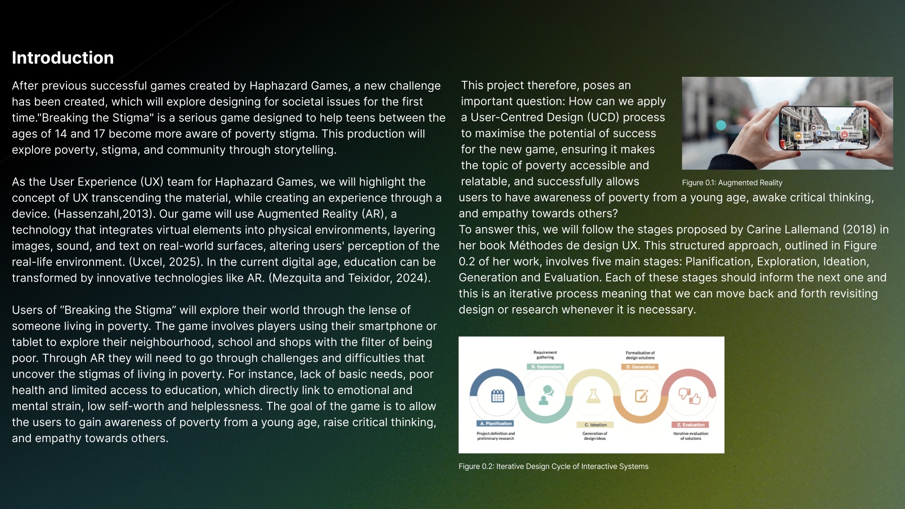
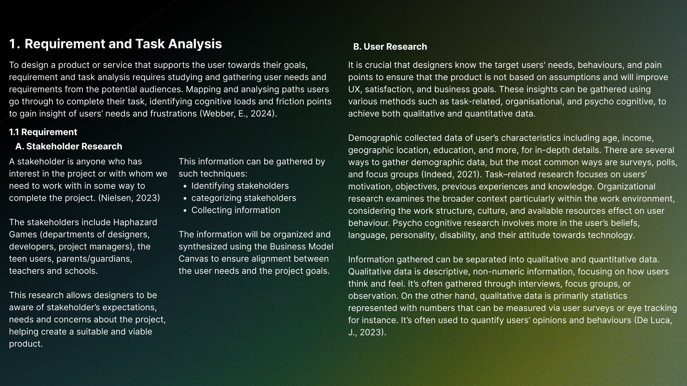
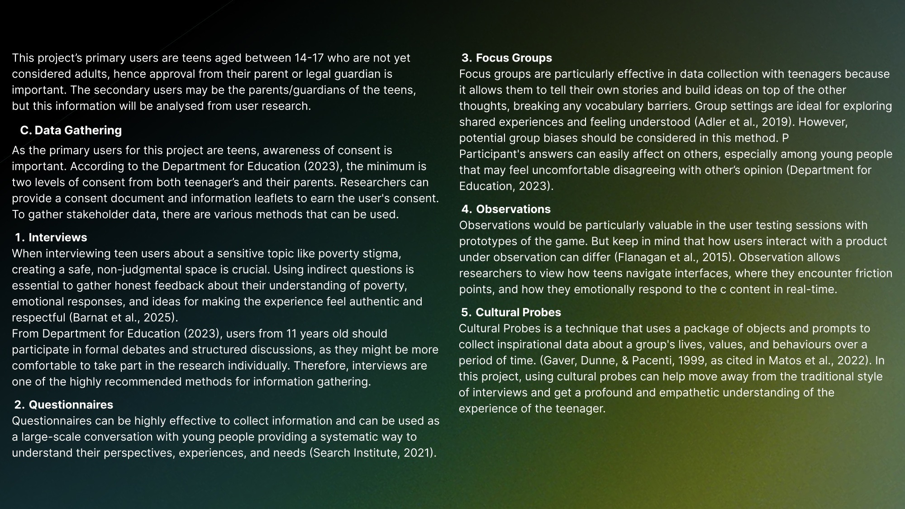
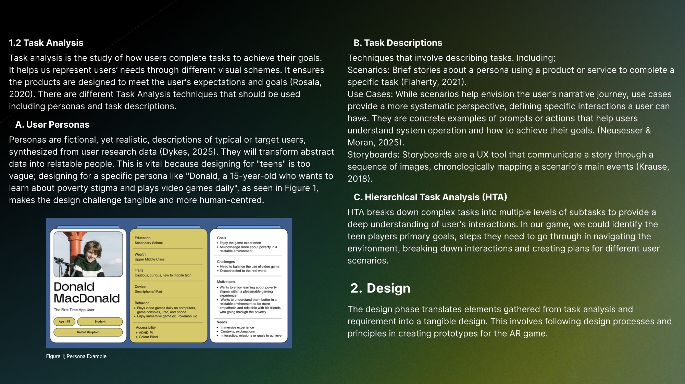
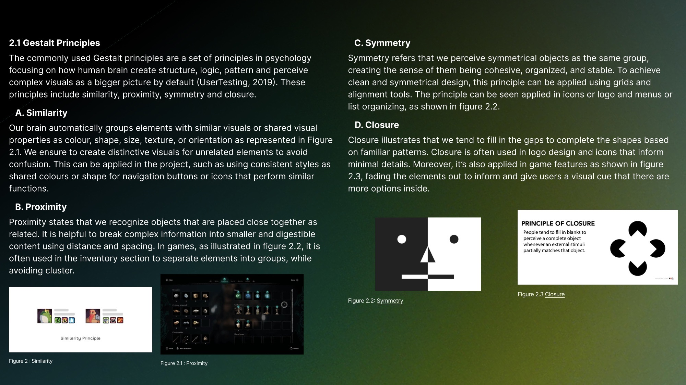
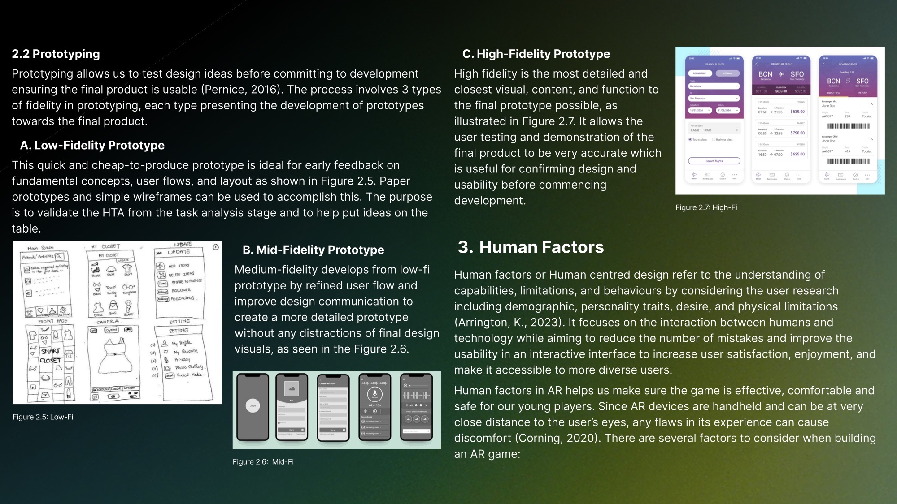
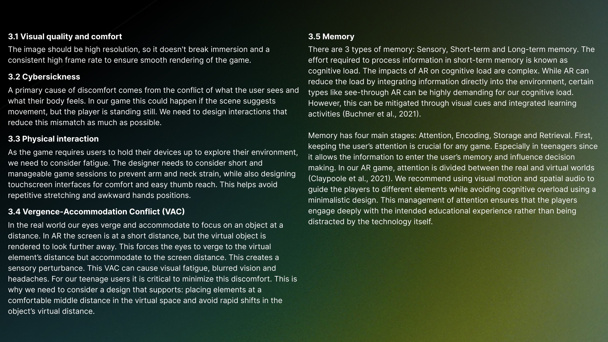
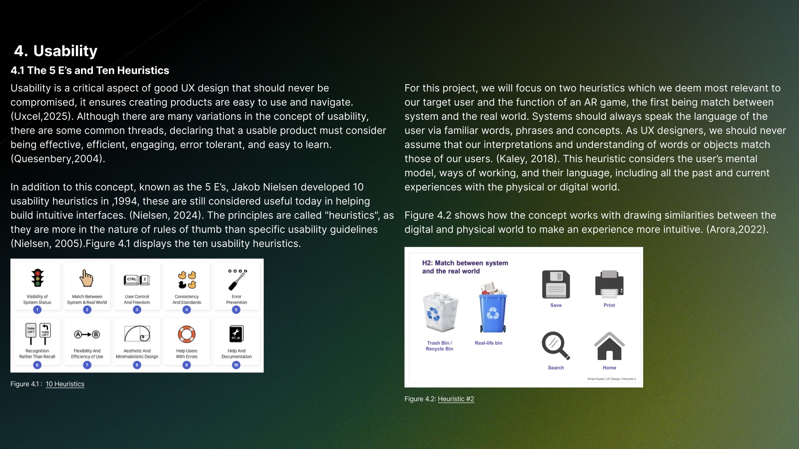
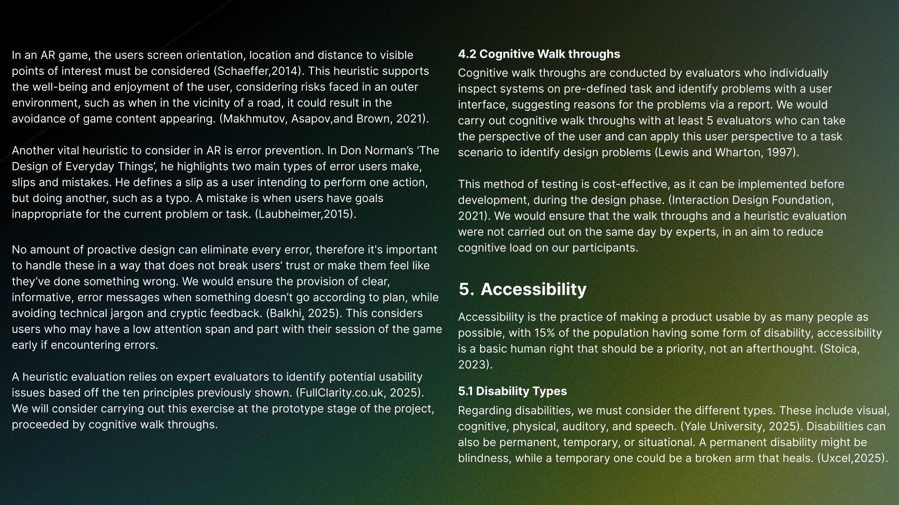
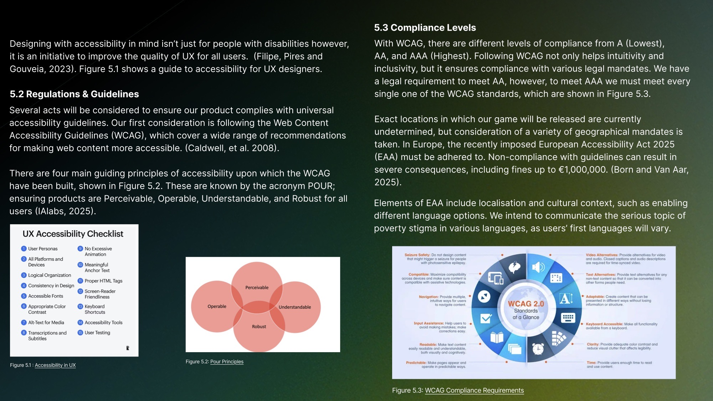
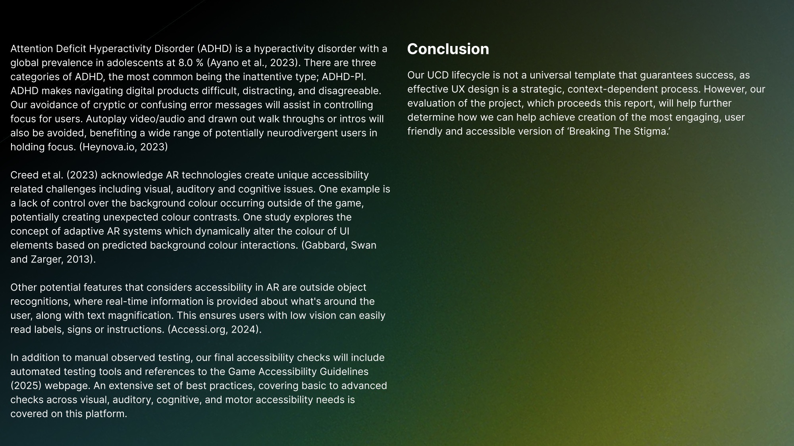